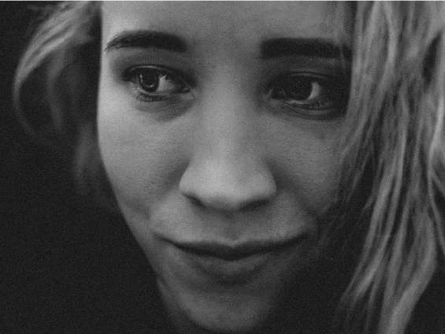

WELCOME TO MY PHOTOGRAPHY WEBSITE!
I'm a professional photographer based in Westport, Co. Mayo, Ireland, specializing in portrait, wedding, and family photography. I offer personalized photography services and packages to capture your special moments. My top priority during my photography sessions is to make sure that my clients feel comfortable and confident in front of the camera. I take the time to get to know my clients and create a relaxed and enjoyable environment, which is essential for capturing authentic and beautiful moments. During my photoshoots, I like to have fun and make my clients feel at ease. I may crack a joke, tell a funny story, or offer a compliment to help my clients feel more relaxed and confident. My goal is to make sure that you look and feel your best in every photo, and I will work with you to find the most flattering angles, lighting, and poses to showcase your unique beauty and personality. Contact me to schedule your photo session or photo shoot today. Thank you for visiting and I look forward to working with you!
TESTIMONIALS
We had a photo shoot with Majka on saturday and it was so wonderful. such a lovely experience and Majka is such a lovely person and made us all feel so comfortable. thankyou so much would highly recommend. 🥰
(Shannon)
There just aren’t enough words to possibly describe how amazing each and every photo is. Maja has a magical way of finding the perfect angle, lighting, and of course expressions. She takes her time to get the best shot and is so friendly to work with. Will surely be using her services in the future.
(Paula)
There is not much to say except that Majka is a born professional and an absolute angel of a soul. Majka cares about her client's needs on a personal level and will do her best to provide the best experience possible. To put it simply: highly recommended.
(Tomek)
"Maja is lovely person and great photographer. She has lots of nice ideas to take fantastic photos. Highly recommend."
(Alexandra)
"Majka is the best Photographer we could have had for our wedding, her attention to detail is unbelievable and the photos are fantastic quality. I recommend Majka to everyone and can’t wait to have more photos taken by her in the near future for a maternity photo shoot ;) ❤️"
(Klaudia)
"Majka is a great photographer. One of the best, I might say. We chose her to take pictures of our family and our business. And every time we were impressed by what she can do. She is a young lady who can create an unimaginable story using simple things. I will recommend her for her passion, seriousness, joy and professionalism."
(Iulia)
"Majka is a great photographer and a wonderful person. She has a professional approach and her photographs “speaks without words”. Even when it was raining, photo shooting with her was an amazing experience! What she can capture, one will understand when he sees her wonderful work. Once again thank you very much Majka! I enjoyed it!"
(Kamca)
"Majka did our daughter's Holy Communion session in September. We are very happy with photos and Majka's professional approach 😊 Arrangements were very efficiently handled, everything went well and timely. We found Majka to be very friendly and enthusiastic young photographer who doesn't fall short on experience site👍All that provided at very good value. We highly recommend Majka's servcices to everyone! Thank you and looking forward to work with you in the future🥰"
(Angelika)
"Nice shooting during our holidays ( birthday present for my wife ).
She took time with all the familly for a professional result 👍"
(Laurent)